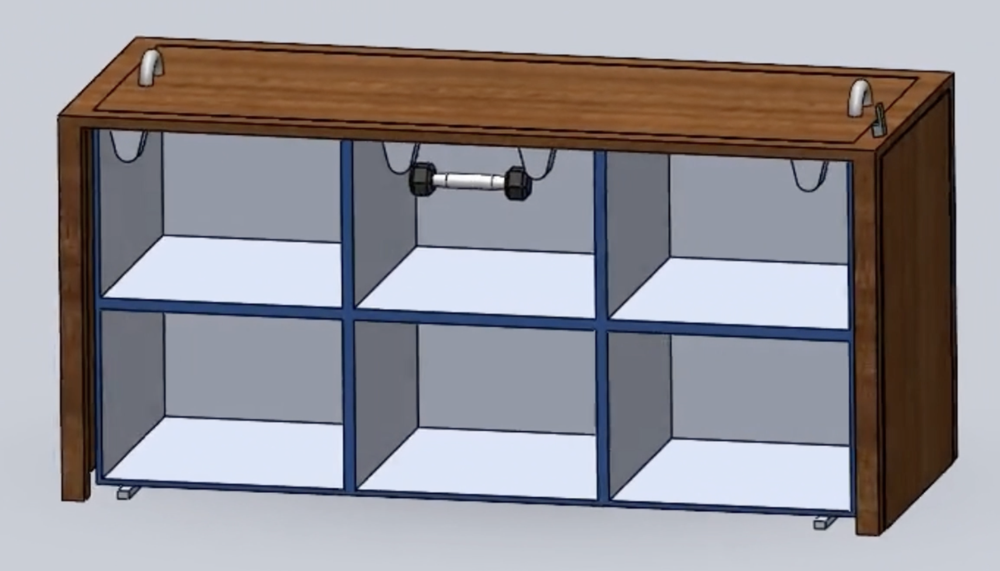

selected project
STABLE
Small space storage design — A way to store clothes that uses vertical space in a limited supply area, while also making the space look sleek and uncluttered.

The Challenge
Boston Health Care for the Homeless Program (BHCHP) is a program that provides healthcare for the homeless. They have a building in Boston where they operate various facets of their programming. My team was assigned to design a device for their atrium, a large open space with natural light. Through user interviews, we discovered that this space is used for community events, group game nights, and a new program they started called the “Clothing Closet.” When we visited, we saw that the program was simply a corner of the atrium that stores clothes. Twice a week, a volunteer sets up a folding table and patients can sign up for a slot to submit their sizes and request what clothing they need.
The Design
Pain Points:
- Poor security to ensure donated clothes aren’t stolen
- Area looks messy
- There is not enough storage as new donations come in
Prototype: A standing table with storage inside and locks
The Final Design
Reflection
This project was produced for the very first design class I've ever taken. It made me feel like I had the ability to make anything I wanted, and that feeling when you can successfully solve a problem. I know my team and I didn't fully build the stable, but after our final presentation, our user came up to us and let us know that this was a great idea and they would look into something similar for their atrium. This project started me on my engineering and design path, and I had so much fun building it.
← Return to My Projects